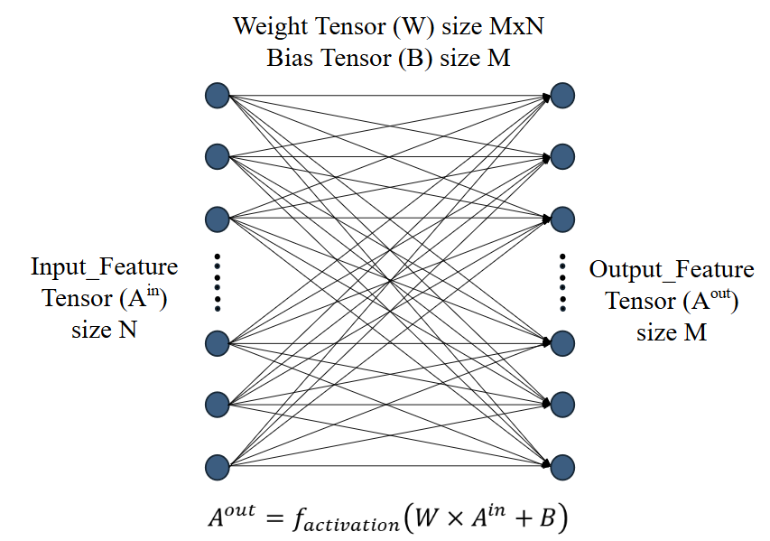
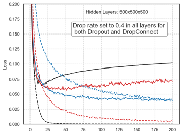
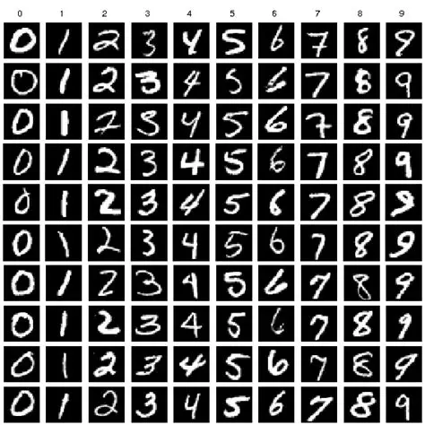

Neural networks excel in numerous tasks such as
image recognition and natural language processing, but fall short in efficiency and effectiveness
due to overfitting, which occurs mainly due to overadaptations during training. Thus, these networks underperform when seeing new
data.
Many solutions have been proposed to address this
issue, including those of Dropout (2012) and Dropconnect (2013), which utilize partial weight pruning to reduce overall neural network complexity.
Despite the large amount of proposals to reduce levels of overfitting in neural networks (pruning and non-pruning),
there remains a lack of comprehensive research and comparisons between such methods.
A lack of
strategically optimal hybrid model proposals has been observed
and studied, which may outperform conventional full Dropout or Dropconnect models.


Using the MNIST dataset (Displayed left) as a universal benchmark image-classification task, neural networks implemented with differing pruning methods were
trained and tested.
Each model
was trained 10 times, and eventual epoch data was gathered and statistical analysis was performed
to find the most effective method of overfitting reduction.